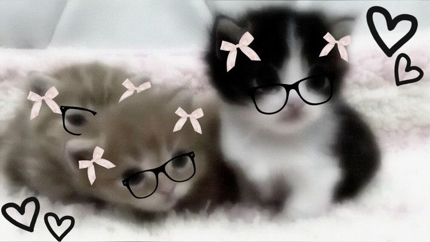

Hola, soy Raquel Villarroel
Amante de los gatos
Esta es una página web donde puedes observar sobre gatitos, porque me gustan mucho al igual que los perritos, pero hoy voy a compartir el amor que le tengo a los gatitos aun que soy una persona alergica a los pelos de mascotas jaja.



Ver gatos en Pinterest
Más información
Teléfono: 099 999 9999
contacto@gatitos.com